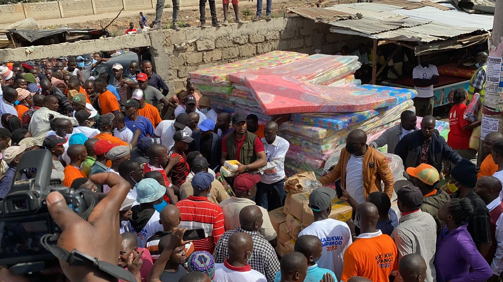

tracked, dated, open to check.
Track
Development Tracker
Every project happening in Embakasi South right now: dated, budgeted, and open for anyone to check.
See the progress trackerPromise Tracker
Every public promise made to Embakasi South, scored honestly: kept, in progress, or not yet started, with evidence linked back to the Development Tracker beside it.
See the promise scorecardField Work

Ground Visits
Every project on the tracker gets a site visit before it's marked verified: photographed, dated, and logged.
See the tracker
Community Meetings
Ward-level gatherings where residents flag needs and review progress directly with the team.
Meet the community
Verification in Practice
What "open for anyone to check" looks like on the ground: proof behind every claim on this site.
How it worksOur mission is to track every promise , verify every claim , and keep Embakasi South's progress open for anyone to check .

Open to everyone, everywhere
Residents, the diaspora, and partners anywhere in the world see the same record and can hold it to the same standard.
See the global visionAccountability you can see. Every claim made here carries proof.
See our approachStay updated
Sign up to receive the latest updates on tracker projects, promise updates, and events across Embakasi South.
Help move Embakasi South forward
Cash, goods, or time: from anywhere in the world, it reaches Embakasi South and goes straight onto the tracker.